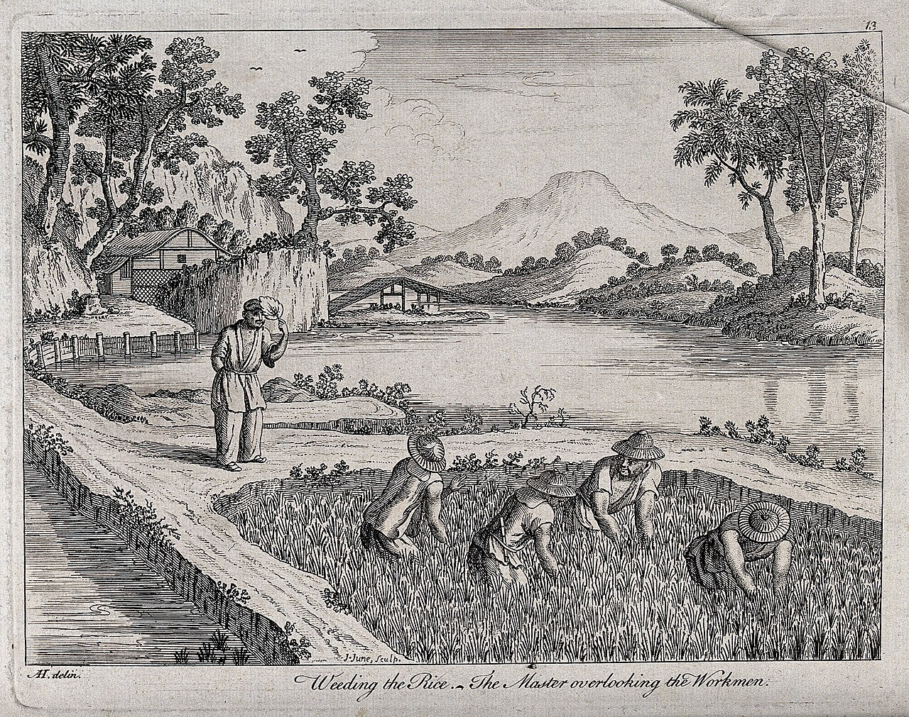

生态系统的能量流动（下）：相关计算与实践意义
本期导读
生态系统的能量流动（下）

视频原话 · 导读3 句
- 同学们好！这节课是生态系统的能量流动下集，讲相关计算和实践意义。7.6s
- 高考常考传递效率的计算、至少和最多消耗多少生产者，以及能量利用率和传递效率的区别。9.0s
- 我们按六个考点梳理，每个考点都讲清楚怎么考、怎么做。5.5s
传递效率的计算01#
传递效率 = 下一营养级同化量 ÷ 上一营养级同化量 × 100%
- 生产者同化 1000 kJ
- →初级消费者同化 150 kJ
- →150 ÷ 1000 = 15%
用同化量，不用摄入量
营养级之间，不是个体之间
同一营养级的所有生物都算
易错
题目给“摄入量”或“粪便量”时，先算出同化量再代入，否则结果偏大
视频原话4 句
- 考点一，传递效率的计算。传递效率 = 下一营养级同化量 ÷ 上一营养级同化量 × 100%。10.2s
- 比如，生产者同化了 1000 kJ，初级消费者同化了 150 kJ，传递效率就是 15%。9.1s
- 注意三点：用同化量，不用摄入量；是营养级之间，不是个体之间；同一营养级的所有生物都要算进去。9.6s
- 易错：题目给出“摄入量”或“粪便量”时，要先算出同化量再代入，否则结果偏大。7.8s
至少与最多消耗02#
知高求低：鹰增重 1 kg，消耗多少草？
至少：最短链 × 20%
草→兔→鹰：1 ÷ 20% ÷ 20% = 25 kg
草→兔→鹰：1 ÷ 20% ÷ 20% = 25 kg
最多：最长链 × 10%
草→鼠→蛇→鹰：1 ÷ 10% ÷ 10% ÷ 10% = 1000 kg
草→鼠→蛇→鹰：1 ÷ 10% ÷ 10% ÷ 10% = 1000 kg
解题方法
至少——短链 × 20%；最多——长链 × 10%；知低求高求“最多获得”：最短链 × 20%
视频原话4 句
- 考点二，至少和最多消耗多少生产者。这类题叫“知高求低”：已知最高营养级增加的量，求消耗的生产者。10.2s
- 求至少消耗：选最短的食物链，按 20% 计算。鹰增重 1 kg，草→兔→鹰，至少需草 1 ÷ 20% ÷ 20% = 25 kg。14.9s
- 求最多消耗：选最长的食物链，按 10% 计算。草→鼠→蛇→鹰，最多需草 1 ÷ 10% ÷ 10% ÷ 10% = 1000 kg。12.7s
- 解题方法：至少——短链 × 20%；最多——长链 × 10%。反过来“知低求高”求最多获得，同样选最短链、按 20%。14.3s
按比例分配计算03#
鹰增重 2 kg，传递效率按 10%，需要多少草？
来自兔 1 kg：1 ÷ 10% ÷ 10% = 100 kg
来自蛇 1 kg：1 ÷ 10% ÷ 10% ÷ 10% = 1000 kg
合计：1100 kg
来自蛇 1 kg：1 ÷ 10% ÷ 10% ÷ 10% = 1000 kg
合计：1100 kg
解题方法
分链计算再相加；“食物来源比例”从高往低逆推，“能量分配比例”从低往高顺推
视频原话4 句
- 考点三，按比例分配的计算。题目会给出某种生物的食物来源比例。6.9s
- 例：鹰的食物 1/2 来自兔、1/2 来自蛇，传递效率按 10%。鹰增重 2 kg，需要多少草？9.7s
- 来自兔的 1 kg：需草 1 ÷ 10% ÷ 10% = 100 kg；来自蛇的 1 kg：需草 1000 kg；合计 1100 kg。12.5s
- 解题方法：分链计算，再相加。比例是“食物来源比例”时，从高营养级往低营养级逆推；比例是“能量分配比例”时，从低往高顺推。13.1s
能量流动模型图04#
a = b + c
b = d + e
e = f + g + 未利用
传递效率（二→三）= f ÷ b
解题方法
先找同化量，再往下拆；粪便量 c 属于上一营养级流向分解者的能量
视频原话5 句
- 考点四，能量流动模型图中各字母的关系。以第二营养级为例。6.6s
- 摄入量 a = 同化量 b + 粪便量 c。3.9s
- 同化量 b = 呼吸散失 d + 用于生长、发育和繁殖 e。6.1s
- e = 流入下一营养级 f + 流向分解者 g + 未利用；第二到第三营养级的传递效率 = f ÷ b。11.1s
- 解题方法：先找同化量，再往下拆。粪便量 c 属于上一营养级流向分解者的能量。8.5s
增大总能量与利用率05#
意义一：时间、空间上合理配置，增大流入的总能量——间作套种、立体农业
意义二：科学规划、设计人工生态系统，使能量得到最有效的利用
- 秸秆
- →喂牲畜
- →粪便入沼气池
- →沼气作燃料
- →沼渣肥田
能量多级利用 → 提高能量利用率
易错
提高的是能量利用率，不是能量传递效率；相邻营养级间的传递效率不变
视频原话4 句
- 考点五，研究能量流动的实践意义。第一，帮助人们将生物在时间、空间上进行合理配置，增大流入某个生态系统的总能量，比如间作套种、立体农业。14.9s
- 第二，帮助人们科学地规划和设计人工生态系统，使能量得到最有效的利用。7.1s
- 比如：秸秆喂牲畜，牲畜粪便进入沼气池，沼渣肥田。原本散失的能量被多级利用，提高了能量利用率。10.6s
- 易错：这样做提高的是能量利用率，不是能量传递效率。相邻营养级间的传递效率不会因此改变。9.3s
调整能量流动关系06#
意义三：合理调整能量流动关系，使能量持续高效地流向对人类最有益的部分
农田除草、灭虫 → 更多能量流向农作物
载畜量过少
牧草浪费
合理载畜量
持续高效
载畜量过多
草原退化
考法
除草灭虫的意义：调整能量流动关系，使能量持续高效地流向对人类最有益的部分
视频原话4 句
- 考点六，第三个实践意义：帮助人们合理地调整能量流动关系，使能量持续高效地流向对人类最有益的部分。9.9s
- 比如农田中除草、灭虫，让更多能量流向农作物；稻田除草，就是这个道理。7.9s
- 又比如草原放牧，要合理确定载畜量：太少浪费牧草，太多会破坏草原，都不能持续高效。9.0s
- 考法：问除草灭虫的意义。答题模板：调整能量流动关系，使能量持续高效地流向对人类最有益的部分。10.3s
易错速查✓
先自己判断，再点按钮查看对错与解析。
- 1传递效率可以用摄入量来计算说法错误：必须用同化量计算
- 2求至少消耗生产者：选最短链、按20%说法正确。
- 3求最多消耗生产者：选最短链、按10%说法错误：选最长链、按10%
- 4秸秆喂牲畜、粪便制沼气提高了能量利用率说法正确。
- 5生态农业提高了能量传递效率说法错误：提高的是能量利用率
- 6除草灭虫使能量更多流向对人类有益的部分说法正确。
至少短链乘二成，最多长链乘一成！
视频原话 · 易错速查5 句
- 最后，用六道判断题检验一下。3.6s
- 判断一：传递效率可以用摄入量来计算？错，必须用同化量。判断二：求至少消耗生产者，选最短链、按 20%？对。13.4s
- 判断三：求最多消耗生产者，选最短链、按 10%？错，选最长链。判断四：秸秆喂牲畜、粪便制沼气提高了能量利用率？对。14.4s
- 判断五：生态农业提高了能量传递效率？错，提高的是能量利用率。判断六：除草灭虫使能量更多流向对人类有益的部分？对。13.4s
- 六个考点串成一条线：至少短链乘二成，最多长链乘一成。我们下期再见！7.7s
图片来源
图片来源：Wikimedia Commons —— Wellcome Collection《Agriculture; four labourers weeding rice paddies in China》CC BY 4.0
Image: Wellcome Collection, CC BY 4.0